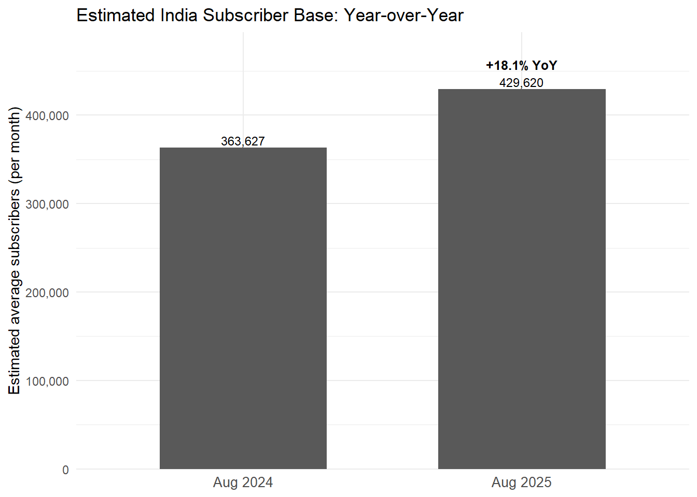

Public Relations Team Analyzes Netflix Films and TV
Author
Sojung Chu
Published
October 5, 2025
Netflix logo
1. Executive Summary
This report analyzes Netflix’s data collection of its film and TV, with the goal of translating viewing patterns into clear, compelling stories that celebrate success, spotlight momentum, and frame opportunities for growth. The Public Relations (PR) team proposes 3 press releases:
STRANGER THINGS Season 5 Sets Sights on No. 1 as Netflix’s Most Viewed English Language TV Season, While Season 4 Holds No. 2
Hindi Titles Enter Netflix Global Top 10, Reflecting the Power of India’s Population and Viewership
Momentum in Season-Over-Season Growth Fuels Netflix’s Next Global Hits
2. Background
As one of the leading global streaming platforms, Netflix has invested heavily in the production of original films and television series that appeal to diverse international audiences (Netflix, 2024). This strategy aligns with the company’s emphasis on creating what its executives have described as “gourmet cheeseburgers,” which refers to high-quality productions that balance creativity and accessibility for mass-market appeal (Hastings, 2021). To support strategic communication efforts, Netflix’s Public Relations team leverages data-driven insights to highlight titles that exemplify commercial success and critical recognition. This project draws upon Netflix’s publicly available Top 10 data to identify trends in popular programming, offering a foundation for press materials that celebrate the platform’s most successful and widely viewed content (Netflix, 2024).
3. Methodology
The following methods were used to obtain and prepare the data for analysis.
3.1 Data Aquisition
The PR team acquired data from Netflix’s TuDum Top 10, the official companion site that publishes data on Netflix’s most popular shows and movies. The selected data sets include the Global Top 10 and Country-wide Top 10.
The structure was examined for the global top 10 data and revealed that when an entry for the season_title is missing, it is being read as a string instead of a proper NA value.
Code
if (!require("tidyverse")) install.packages("tidyverse")library(readr)library(dplyr)library(scales)GLOBAL_TOP_10 <-read_tsv("data/mp01/all-weeks-global.tsv")str(GLOBAL_TOP_10)
To fix this, the data was transformed into proper NA values.
For the second, similarly structured database, the transformation was applied during import. As a result, two data objects GLOBAL_TOP_10 and COUNTRY_TOP_10 were obtained with season_title of both data sets having proper NA values.
Code
COUNTRY_TOP_10 <-read_tsv("data/mp01/all-weeks-countries.tsv", na =c("", "N/A"))
4. Campaign Overview
Key findings from the exploratory data analysis (EDA) conducted in R using the dplyr package across the two datasets:
Until You Burn is the longest film (English or non-English) to have ever appeared in the Netflix global top 10 and is 2855 minutes long.
Code
# build one winner per category, by total global hourstop_global_by_category <- GLOBAL_TOP_10 |>group_by(category, show_title) |>summarize(total_hours =sum(weekly_hours_viewed, na.rm =TRUE)) |>slice_max(total_hours, n =1) |>ungroup()# present as an interactive table (pretty titles + rounded hours)winners_dt <- top_global_by_category |>format_titles() |>arrange(Category) |>datatable(options =list(searching =FALSE, info =FALSE)) |>formatRound("Total Hours", 0)
Table 1: The Highest Total Hours of Global Viewership in Each Netflix Category
Netflix provides over 200 weeks of service history for all countries within the data set except Russia. Netflix ceased operations there as of 02-27-2022, which is the last week recorded.
The TV show Squid Game has 5,048,300,000 total number of hours watched across all three seasons.
Code
library(lubridate)# Total 2021 hours for Red Notice, then convert hours -> views using runtime (1h 58m = 118/60 h)red_notice_2021 <- GLOBAL_TOP_10 |>filter(show_title =="Red Notice", year(week) ==2021) |>summarize(total_hours_2021 =sum(weekly_hours_viewed, na.rm =TRUE)) |>ungroup() |>mutate(runtime_hours =118/60, # 1 hour 58 minutesapprox_views_2021 = total_hours_2021 / runtime_hours ) # hours ÷ hours-per-view
Red Notice received approximately 201,732,203 views in 2021.
Code
# US films that debuted below #1 but later reached #1 — table in your preferred styleus_films_debut_then_num1 <- COUNTRY_TOP_10 |>filter(country_name =="United States", category =="Films") |>arrange(show_title, week) |>group_by(show_title) |>summarize(debut_week =min(week, na.rm =TRUE),debut_rank = weekly_rank[which.min(week)],first_week_at_1 =if (any(weekly_rank ==1)) min(week[weekly_rank ==1]) elseas.Date(NA_character_) ) |>ungroup() |>filter(debut_rank >1, !is.na(first_week_at_1)) |>select(show_title, debut_week, first_week_at_1)# most recent film to hit #1most_recent_us_late_number1 <- us_films_debut_then_num1 |>slice_max(first_week_at_1, n =1)# present as tablenum1_dt <- us_films_debut_then_num1 |>format_titles() |>arrange(desc(`First Week At 1`)) |>datatable(options =list(searching =FALSE, info =FALSE))
In the US, 44 films debuted below #1 but later reached #1. The most recent was KPop Demon Hunters, which hit #1 on 08-10-2025.
Table 2: Films Reached Number 1 on Netflix in the US Without Debuting There
The TV show/season Emily in Paris (Emily in Paris: Season 2) hit the Top 10 in the most countries during its debut week, appearing in 94 countries.
5. Proposed Press Releases
The following are suggested press releases to highlight Netflix’s recent successes.
5.1 STRANGER THINGS Season 5 Sets Sights on No. 1 as Netflix’s Most Viewed English Language TV Season, While Season 4 Holds No. 2
Code
# Top 5 most-viewed English-language TV seasonstop5_eng_tv_seasons <- GLOBAL_TOP_10 |>filter(category =="TV (English)") |>group_by(show_title, season_title) |>summarize(total_hours =sum(weekly_hours_viewed, na.rm =TRUE)) |>ungroup() |>slice_max(total_hours, n =5) |>arrange(desc(total_hours))eng_top5_dt <- top5_eng_tv_seasons |>format_titles() |>arrange(desc(`Total Hours`)) |>datatable(options =list(searching =FALSE, info =FALSE)) |>formatRound("Total Hours", 0)# Total viewership and length of popularityst_global <- GLOBAL_TOP_10 |>filter(category =="TV (English)", show_title =="Stranger Things") |>summarize(total_hours =sum(weekly_hours_viewed, na.rm =TRUE), weeks_global =n_distinct(week)) |>ungroup()# How many countries had the show in its top 10st_countries <- COUNTRY_TOP_10 |>filter(category =="TV", show_title =="Stranger Things") |>summarize(num_countries =n_distinct(country_name)) |>ungroup()
Table 3: Most Viewed Netflix English Language TV Season
Netflix’s global phenomenon Stranger Things returns in late 2025 for its fifth and final season, aiming to become the most viewed English language TV season on Netflix and going out strong. Stranger Things Season 4 currently sits at #2, while Wednesday: Season 1 holds the top spot. With a legacy few can match, Stranger Things across all four seasons has 2,967,980,000 total hours viewed globally. It also sustained popularity across 20 weeks in the global Top 10, and resonated with audiences in 93 countries. With the finale approaching, the series aims to close its story in a captivating way that tops the charts.
5.2 Hindi Titles Enter Netflix Global Top 10, Reflecting the Power of India’s Population and Viewership
Code
library(ggplot2)library(scales)# --- Assumption: average Hindi* views per Indian subscriber per week ---views_per_sub_week <-5# --- Ensure Date columns ---GLOBAL_TOP_10 <- GLOBAL_TOP_10 |>mutate(week =as.Date(week))COUNTRY_TOP_10 <- COUNTRY_TOP_10 |>mutate(week =as.Date(week))# --- India weight per show = share of its country-weeks that are India ---india_weights <- COUNTRY_TOP_10 |>group_by(show_title) |>summarize(india_rows =sum(country_name =="India"),total_rows =n() ) |>ungroup() |>mutate(w_india =if_else(total_rows >0, india_rows / total_rows, 0))# --- Monthly India-proxy (weighted views), start at 2024 ---india_proxy_monthly <- GLOBAL_TOP_10 |>inner_join(india_weights, by ="show_title") |>mutate(month =floor_date(week, "month")) |>filter(month >=as.Date("2024-01-01")) |>group_by(month) |>summarize(total_views_weighted =sum(weekly_views * w_india, na.rm =TRUE),weeks_in_month =n_distinct(week) ) |>ungroup() |>arrange(month) |>mutate(est_avg_subs = total_views_weighted / (views_per_sub_week * weeks_in_month))# --- Keep ONLY Aug 2024 & Aug 2025 and compute YoY growth ---india_aug <- india_proxy_monthly |>filter(month %in%as.Date(c("2024-08-01", "2025-08-01"))) |>mutate(Month =format(month, "%b %Y")) |>arrange(month) |>mutate(Month =factor(Month, levels =c("Aug 2024", "Aug 2025")))aug24 <- india_aug$est_avg_subs[india_aug$Month =="Aug 2024"]aug25 <- india_aug$est_avg_subs[india_aug$Month =="Aug 2025"]rate_change_pct <-if (length(aug24) ==1&&length(aug25) ==1&&!is.na(aug24) &&!is.na(aug25) && aug24 >0) { (aug25 / aug24 -1) *100} else {NA_real_}# --- Plot ONLY Aug 2024 vs Aug 2025, with YoY % on the 2025 bar ---ggplot(india_aug, aes(x = Month, y = est_avg_subs)) +geom_col(width =0.6) +geom_text(aes(label =comma(round(est_avg_subs))), vjust =-0.25, size =3.2) +geom_text(data =subset(india_aug, Month =="Aug 2025"&!is.na(rate_change_pct)),aes(label =paste0(sprintf("%+.1f", rate_change_pct), "% YoY")),vjust =-2.0, size =3.3, fontface ="bold" ) +scale_y_continuous(labels = comma, expand =expansion(mult =c(0, 0.15))) +labs(title ="Estimated India Subscriber Base: Year-over-Year",x =NULL,y ="Estimated average subscribers (per month)" ) +theme_minimal() +theme(axis.text.x =element_text(size =10),panel.grid.minor.x =element_blank() )

Code
format_titles <-function(df) {colnames(df) <-colnames(df) |>str_replace_all("_", " ") |>str_to_title() df}# Ensure Date columnsGLOBAL_TOP_10 <- GLOBAL_TOP_10 |>mutate(week =as.Date(week))COUNTRY_TOP_10 <- COUNTRY_TOP_10 |>mutate(week =as.Date(week))# Titles disproportionately present in India (soft proxy for Hindi)# Tweak thresholds if neededmin_india_weeks <-2min_share_india <-0.25india_dominant_titles <- COUNTRY_TOP_10 |>group_by(show_title) |>summarize(india_rows =sum(country_name =="India"),total_rows =n(),india_weeks =n_distinct(week[country_name =="India"]) ) |>ungroup() |>mutate(share_india =if_else(total_rows >0, india_rows / total_rows, NA_real_)) |>filter(!is.na(share_india), india_weeks >= min_india_weeks, share_india >= min_share_india ) |>distinct(show_title)# Global debut (first week seen in GLOBAL_TOP_10) for those India-dominant titleshindi_global_debuts <- GLOBAL_TOP_10 |>inner_join(india_dominant_titles, by ="show_title") |>group_by(show_title, season_title) |>summarize(global_debut =min(week, na.rm =TRUE)) |>ungroup() |>filter(global_debut >=as.Date("2024-01-01")) |>arrange(desc(global_debut)) |>slice_head(n =10)# Optional: show as an interactive table (same styling you use elsewhere)hindi_debuts_dt <- hindi_global_debuts |>format_titles() |>arrange(desc(`Global Debut`)) |>datatable(options =list(searching =FALSE, info =FALSE))
As Hindi originals continue to break through globally, Netflix is seeing clear momentum from India’s massive, fast-growing audience. Using a Hindi-viewing proxy, our August snapshot shows an estimated 429,620 Indian subscribers, 18.1% year-over-year growth from 363,627 in August 2024. Recent Hindi titles have entered the Global Top 10, underlining both the scale of India’s streaming demand and its growing influence on worldwide viewing. Note: Our approach treats India-dominant titles (by country concentration) as a practical proxy for “Hindi.” It’s an approximation, but it consistently surfaces the titles most likely to be Hindi-led.
5.3 Momentum in Season-Over-Season Growth Fuels Netflix’s Next Global Hits
Fueled by record season-over-season gains across serialized TV, Netflix today celebrates a slate of franchises scaling to new heights and announces potential expansion commissioning in fast-growing international markets. The biggest leap came from Black Mirror (Season 6), which surged 2676.3% versus its prior season (from 5,900,000 to 163,800,000 total hours). Notably, 1 of the Top 5 growth breakouts are Non-English and evidence of accelerating demand beyond English-language markets, while the Top 5 averaged 1629.3% SoS growth overall (standouts include Black Mirror S6, Money Heist S5, Ozark S4, Good Girls S4, Love Is Blind S2). Building on this momentum, Netflix will deepen investment in high-growth regions (content development, local marketing, and talent partnerships) to extend multi-season franchises and capture rising engagement where audiences are expanding fastest.
6. Conclusion
In conclusion, the PR team report emphasizes Netflix’s success with data-based metrics. There are three suggested press releases from the findings.